L'ambition de cette série de tutoriels étant d'apprendre à sculpter les ballons aux parfaits débutants, j'ai remarqué qu'au départ, un certain nombre d'entre vous, enfants ou adultes, aviez du mal à effectuer les nœuds de ballon.
La technique utilisée dans ce tutoriel permet d'éviter tout frottement du ballon contre la peau des doigts. C'est un détail qui peut paraître anodin mais qui prend toute sa signification lorsqu'on effectue des centaines de nœuds à suivre. Et c'est ce qui vous arrivera dès que votre notoriété de sculpteur sur ballon dépassera le cadre de votre famille, de votre quartier ou même de votre région. C'est pourquoi vous devez prendre de bonnes habitudes dès le départ.
Essayez lentement et régulièrement jusqu'à ce que vous puissiez parfaitement imprimer cette séquence de mouvements dans votre mémoire gestuelle et l'effectuer rapidement sans même y réfléchir.
Amusez-vous bien... et entraînez-vous régulièrement !
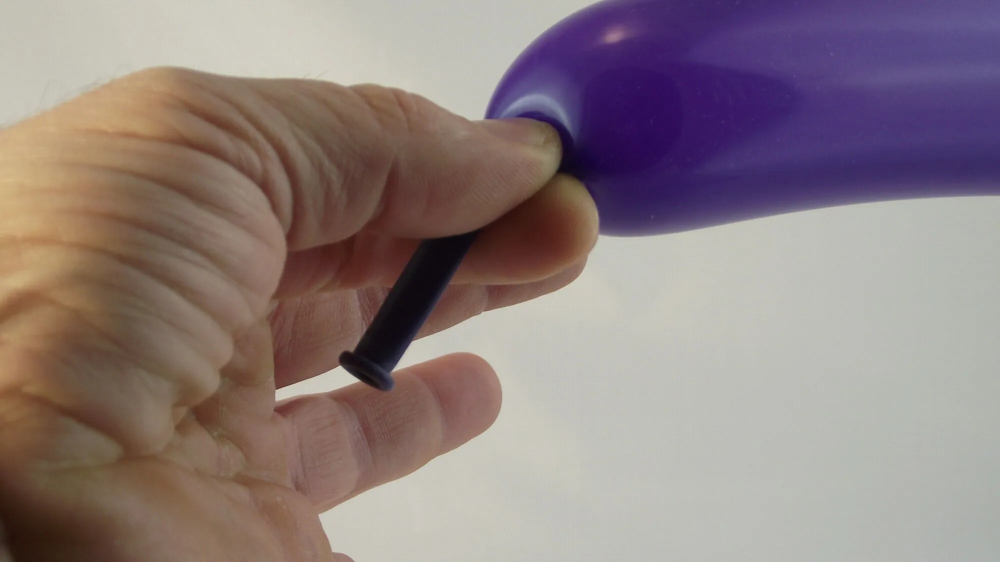1- Gonfler un ballon en laissant le plus de marge possible après l'embouchure du ballon qui doit se diriger vers la paume, qui elle-même doit vous faire face. 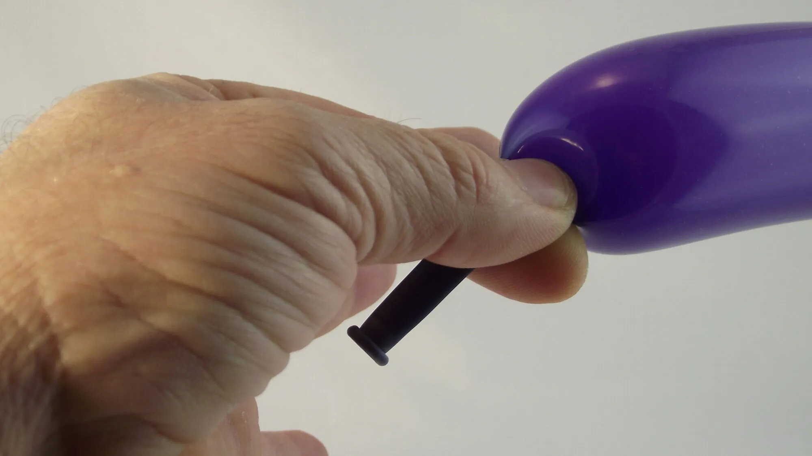2- Le pouce et l'index pincent le ballon et empêchent l'air de s'échapper. Faîtes pivoter doucement votre main...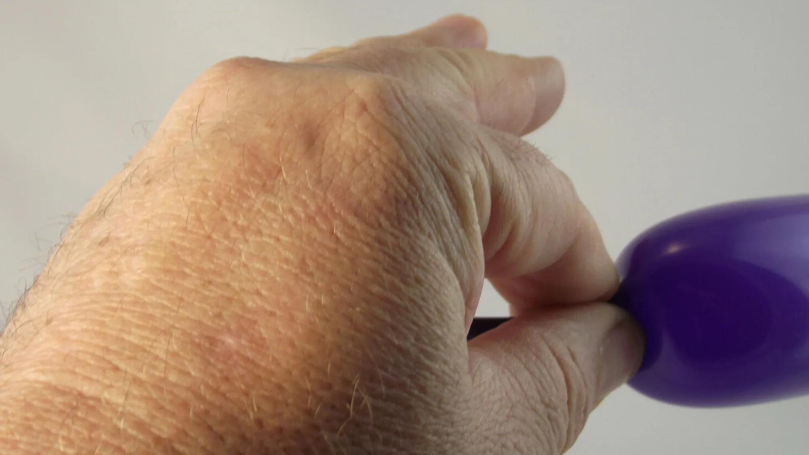3- Encore un peu plus… on ne doit plus voir la paume.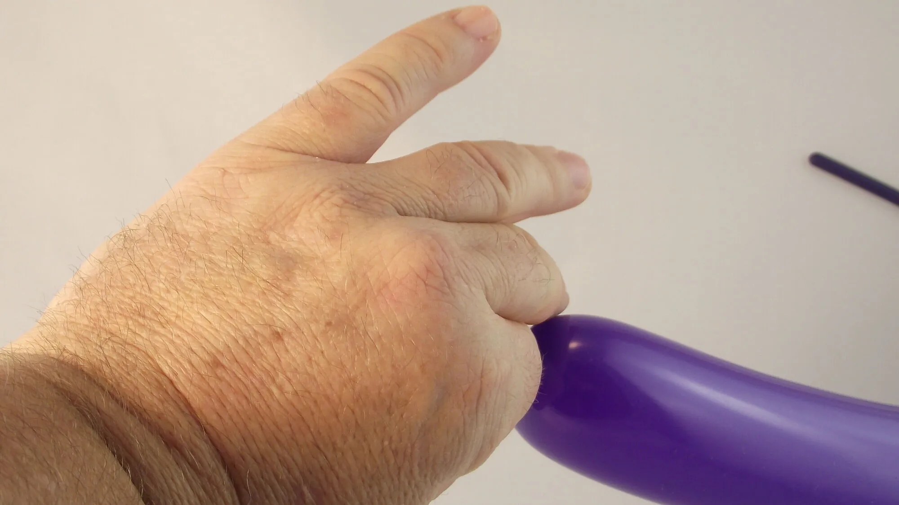4- Une fois que votre main est entièrement retournée vers l'extérieur…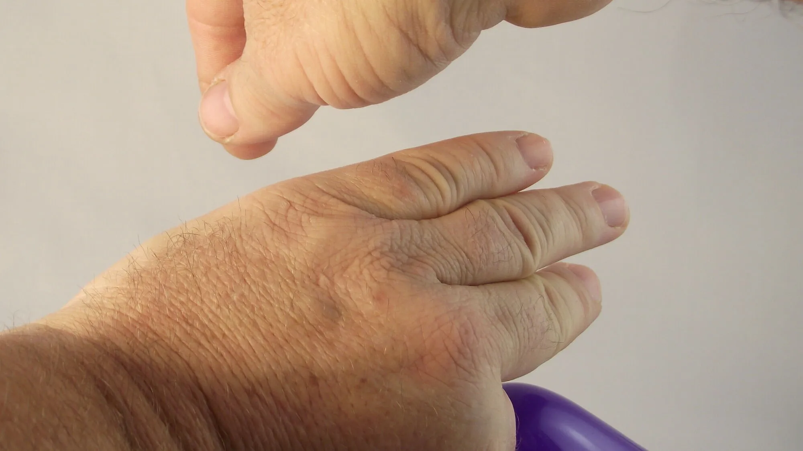5- Passer l'autre main par dessus pour attraper l'embouchure du ballon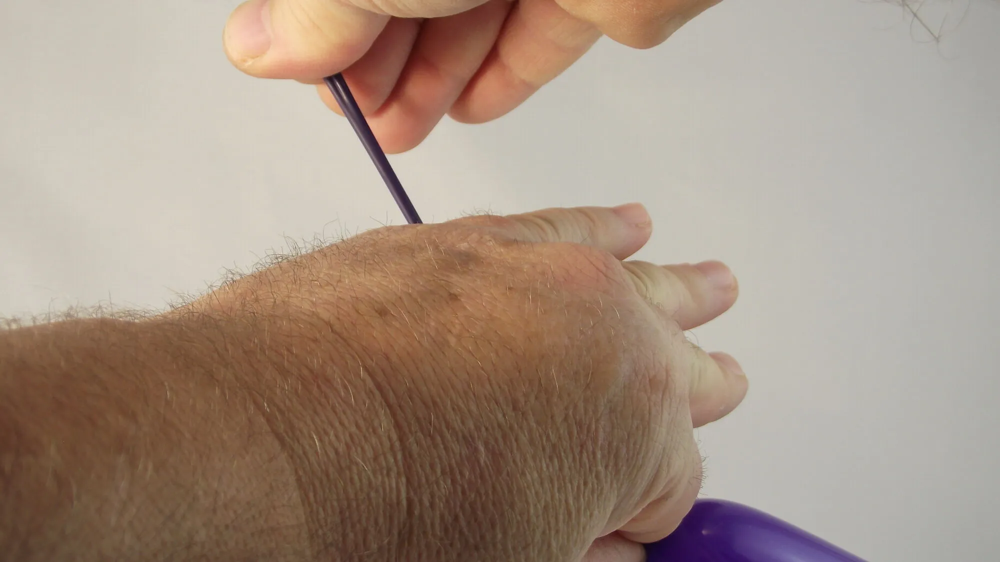6- Tirer sur l'embouchure du ballon et former ainsi un long filet de ballon...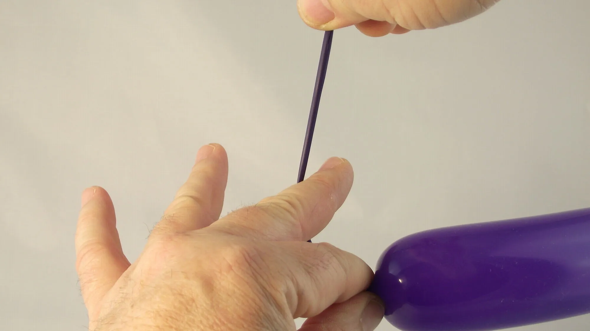7- Écarter les doigts tout en retournant la paume à nouveau vers vous.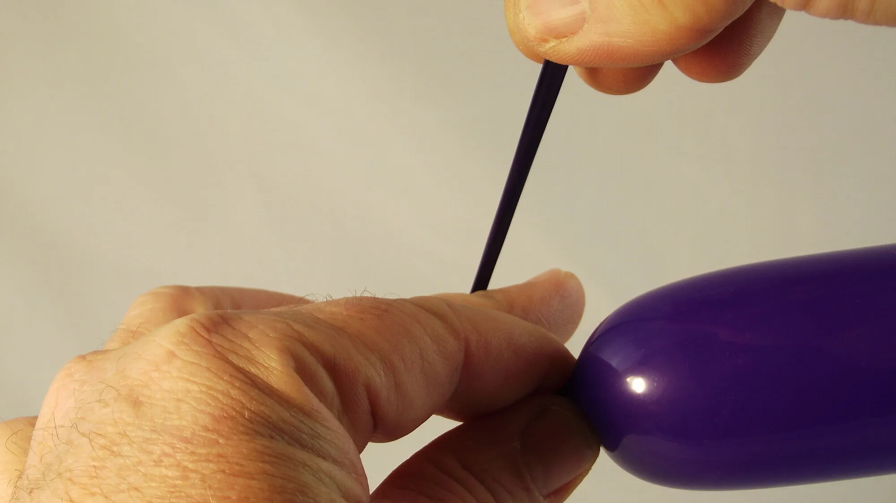8- Faire passer le long filet de ballon juste derrière le majeur...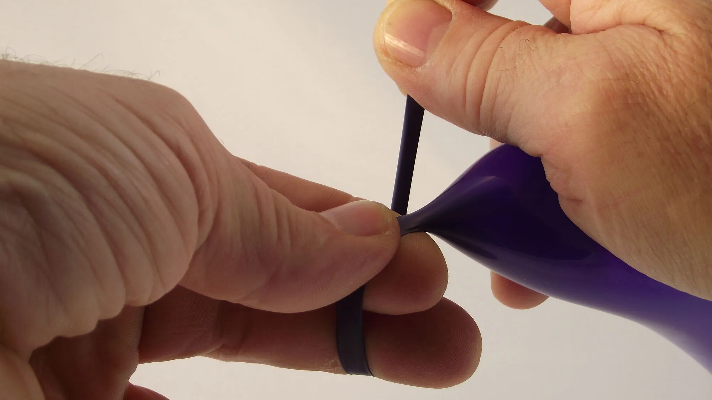9- Finir de retourner votre main afin que votre paume soit de nouveau complètement face à vous. 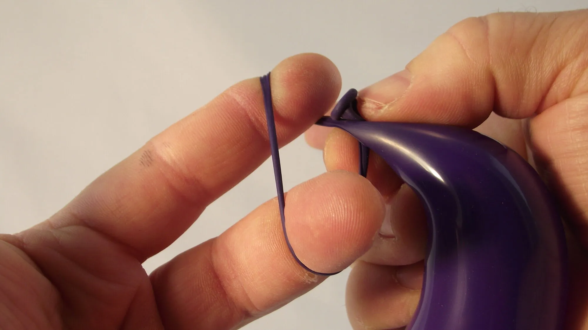10- Former une boucle autour de l'index et du majeur en positionnant l'embouchure du ballon juste derrière la base de la partie gonflée du ballon.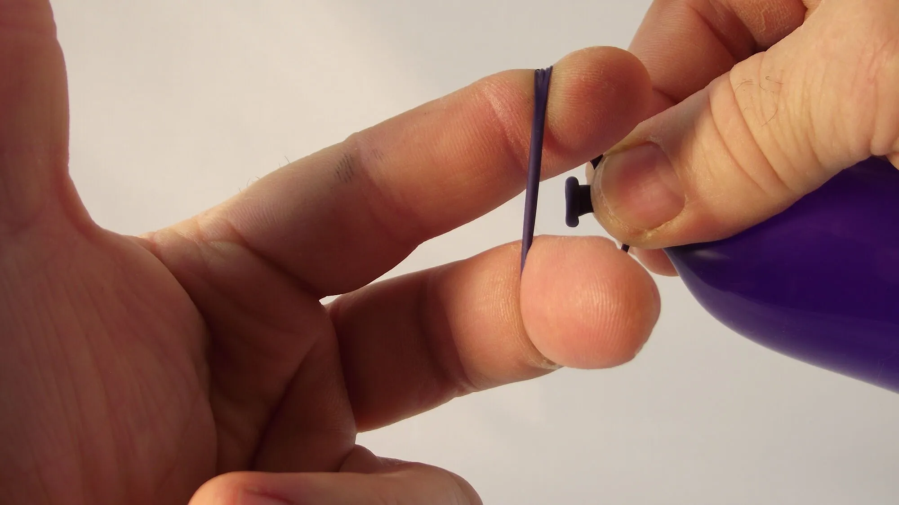11- Puis faire passer l'embouchure du ballon au centre de la boucle.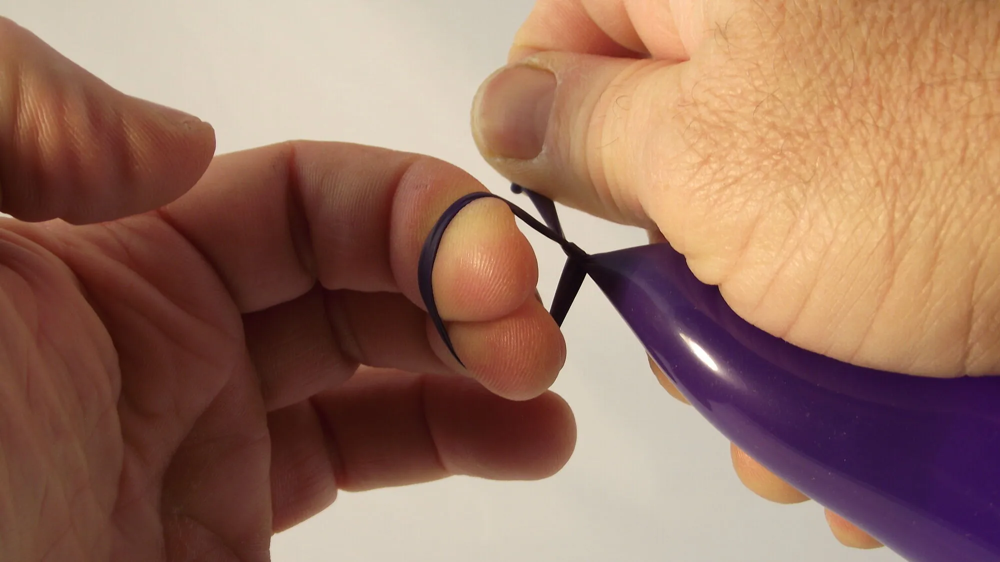12- Une fois que l'embouchure du ballon est passée au travers de la boucle, la rattraper avec le pouce et l'index.13- Dégager les deux doigts de la boucle afin que le nœud puisse se refermer entièrement sur lui-même. En profiter pour faire passer le ballon dans l'autre main...14- afin de pouvoir correctement tirer sur le nœud.15- Et voilà ! À bientôt ! Pour une autre leçon… avec Môssieur Ballon !